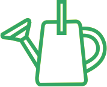
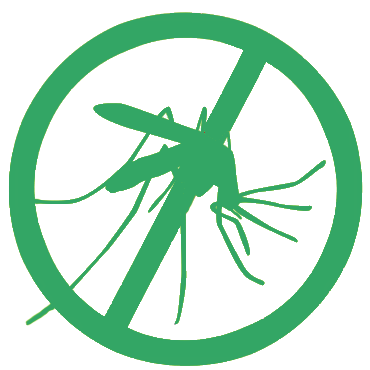
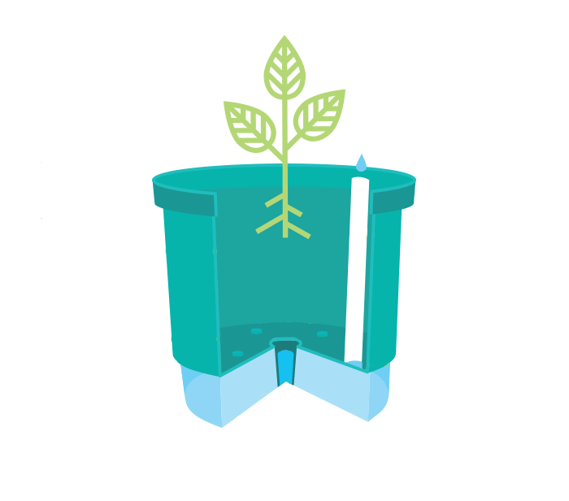
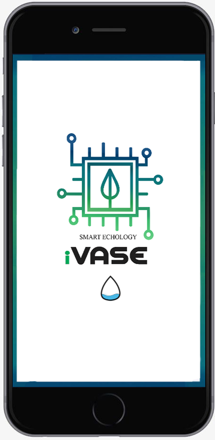

-
iVASE
-
O vaso que cuida de suas plantas enquanto você estiver ausente!
O iVASE é um vaso inteligente que ajuda suas plantas a florescer. O sistema de auto-rega e os sensores embutidos monitoram sua planta o tempo todo. É jardinagem fácil!
Veja como funciona abaixo!
Autoirrigável

Reservatório

Antidengue

Dreno

Baixe nosso aplicativo!

Luz, temperatura, umidade do solo e nível de reservatório de água: você está conectado em tempo real à saúde da sua planta. Você sabe exatamente o que precisa. Todos os dados coletados são enviados para o seu smartphone com a tecnologia sem fio Bluetooth, um padrão ecológico.